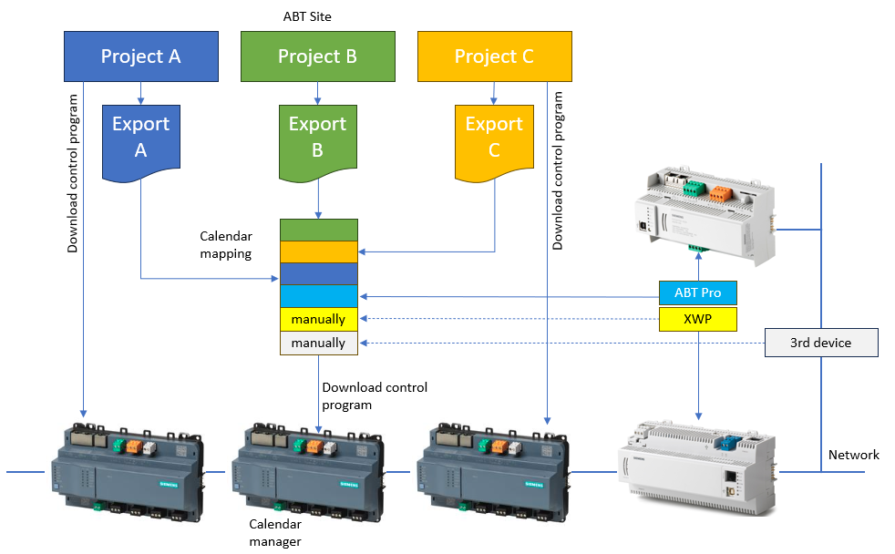

导出整个项目的日历信息
- Go to Building > Building structure.
- Select the building hierarchy
 or a floor hierarchy
or a floor hierarchy  .
. - Right-click and select Export calendars in project.
- The Export calendar dialog opens.
- Click Open folder.
- Select the exported calendar file and open it with Excel.
Configure the calendar manager the first time (with Excel)
- The export file is stored at the default location
C:\Users\Public\Documents\Siemens\Desigo\Exports\[Export{Date and Time}.csv]
or
according the Projects and paths settings.
Settings

在同一网络上有多个 ABT 站点项目可用的大型项目中，必须对每个项目执行导出。然后，必须一步合并并导入导出文件。对于尚未使用 ABT 站点创建的日历，例如 Desigo PX、Apogee 或第 3 方日历，必须在日历管理器中手动输入设备 ID 和对象 ID。
